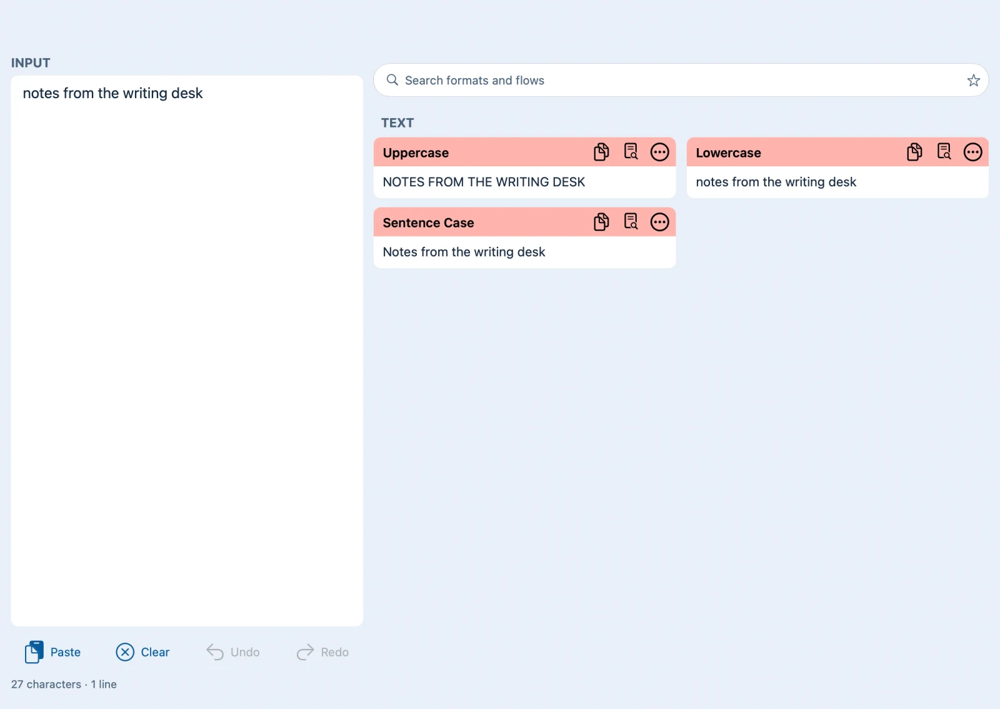
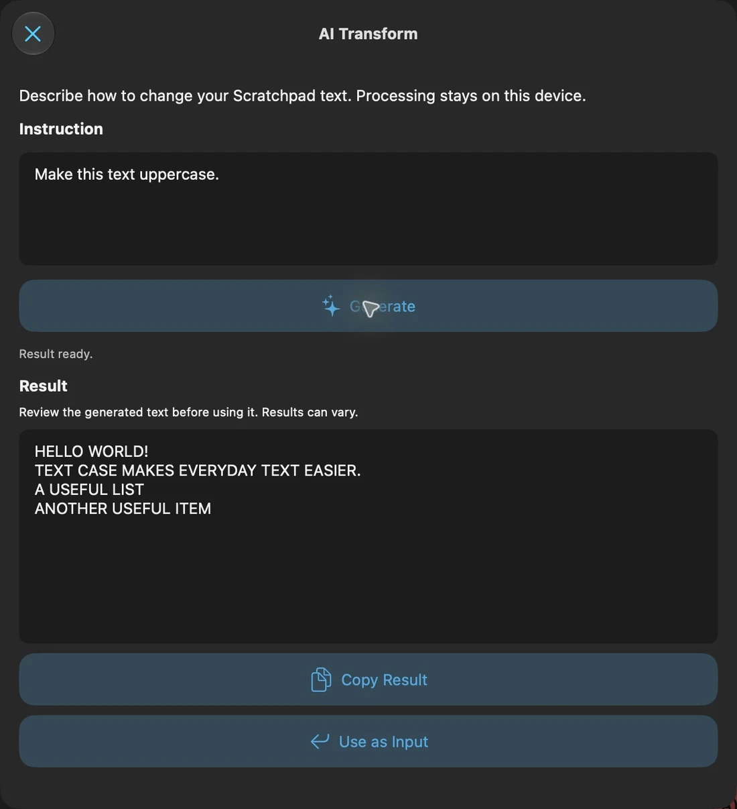
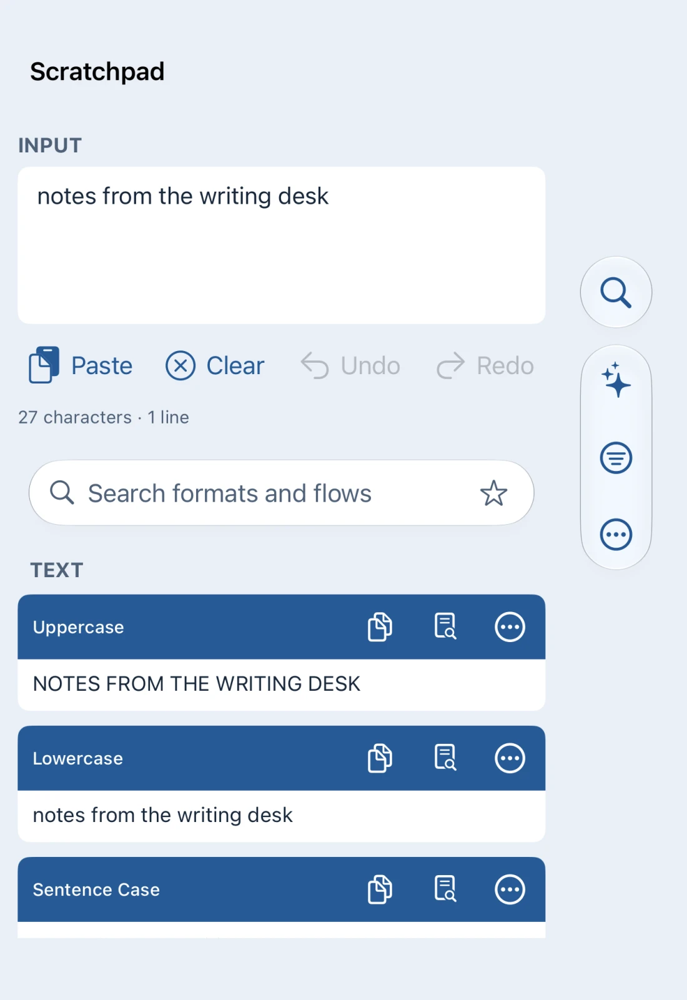
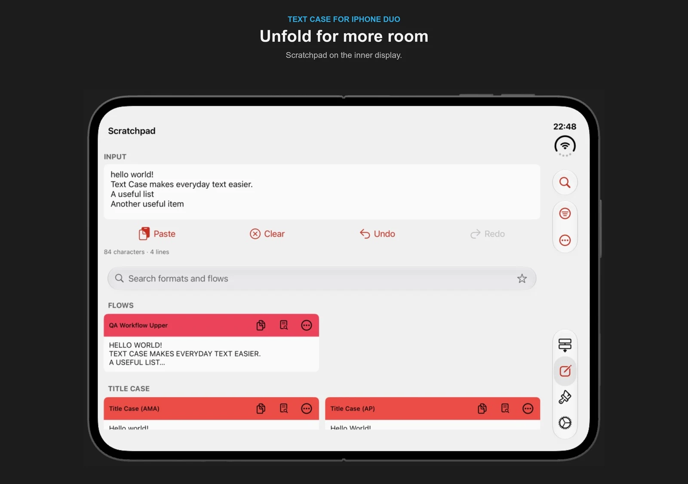

Make text work
for you.
Clean up a paste, fix a headline or format a block of JSON. Save the edits you repeat as a flow. Text Case is available for iPhone, iPad and Mac.


SCRATCHPAD
See several edits at once.
Paste text once and compare results from 77 built-in formats and your saved flows. Search for a format or tap the star to see your favourites. Copy a result, share it or make it your next input.
Try the formatsnotes from the writing desk
- Title Case (AP)
- Notes From the Writing Desk
- URL Slug
- notes-from-the-writing-desk
- Snake Case
- notes_from_the_writing_desk
FLOW BUILDER
Do the fiddly bits once.
Trim a list, remove duplicates and wrap it in Markdown bullets, all in one flow. Reorder steps, switch one off, and see how it changes the result before you save.
Try a starter flow
AI TRANSFORM
Describe the edit you want.
Ask for a shorter paragraph or a switch to British English. Review the result in Scratchpad, or save your instruction as a named format to use in flows.
Runs on supported devices with Apple Intelligence enabled.
Explore AI Transform
MAC MENU BAR
Stay in the app you’re using.
Copy text, press ⌃⌥⌘T and choose a flow or format. Paste the result back where you were working. You can restore the previous clipboard while it still holds the last result.
Set up the menu bar pickerSTARTER FLOWS
Try an edit you can reuse.
Open a downloaded flow from Files or Finder and confirm the import in Text Case 2026.1. You can also drop it onto the Flows list. Each recipe imports as an editable copy.
Trim each line, remove blanks and exact duplicates, then sort.
Apples Bananas Pears
More room when you unfold.
Scratchpad adapts from the iPhone Duo’s outer display to its larger inner display, where there’s room for more results.




GET TEXT CASE
Make the next edit easier.
Text Case 2026.1 requires iOS or iPadOS 26.0, or macOS 26.0. Check your App Store listing for local pricing and availability.